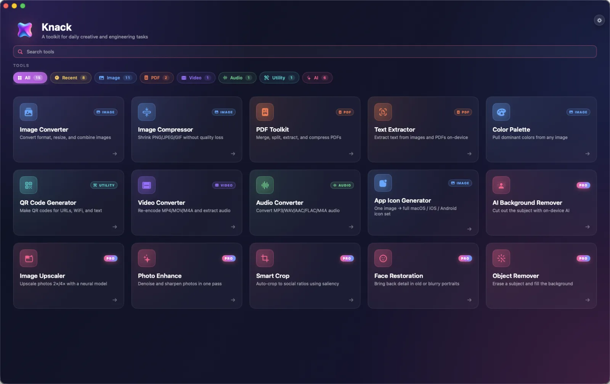

Knack
Toolkit for macOS
Twenty tools your Mac was missing.
Convert images, shrink and merge PDFs, pull text out of scans, transcribe audio, cut out backgrounds and turn one picture into a full app icon set. Every tool runs on your Mac with Apple's own frameworks. No uploads, no account.
- Price
- Free · Pro $4.99 once
- Runs on
- macOS 15+, Apple silicon
